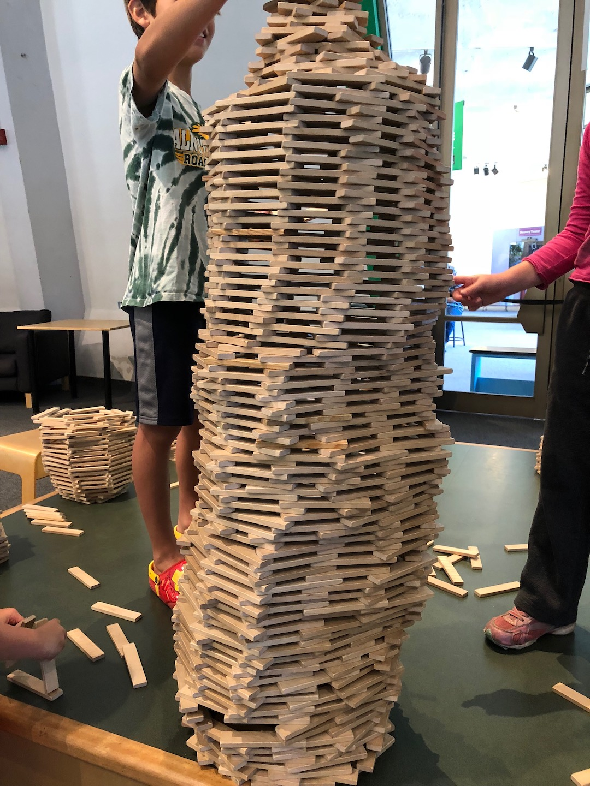
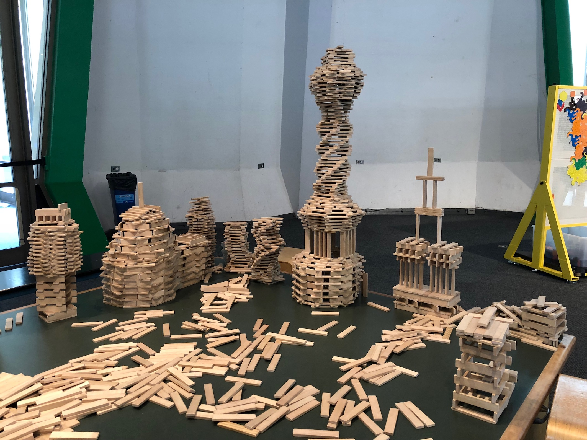
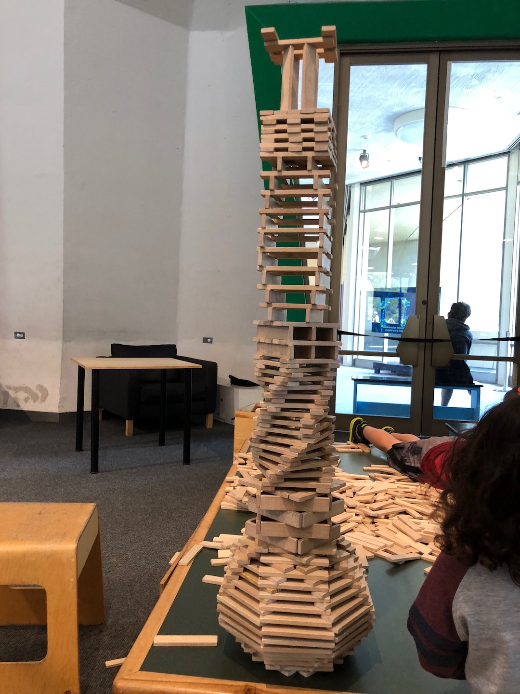
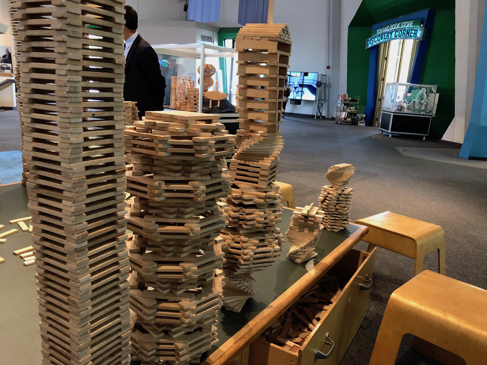
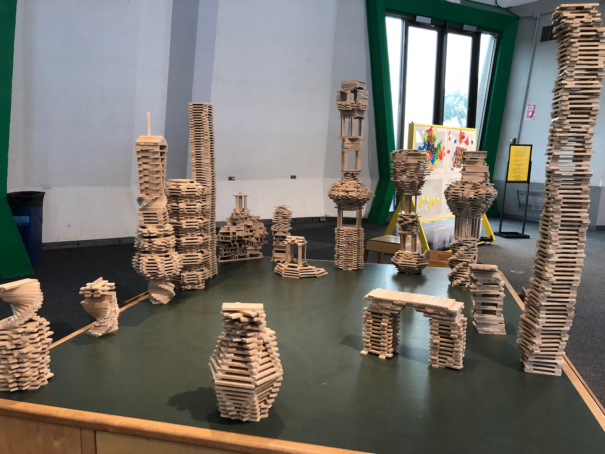
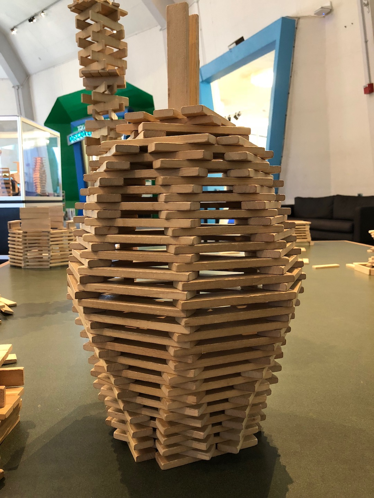
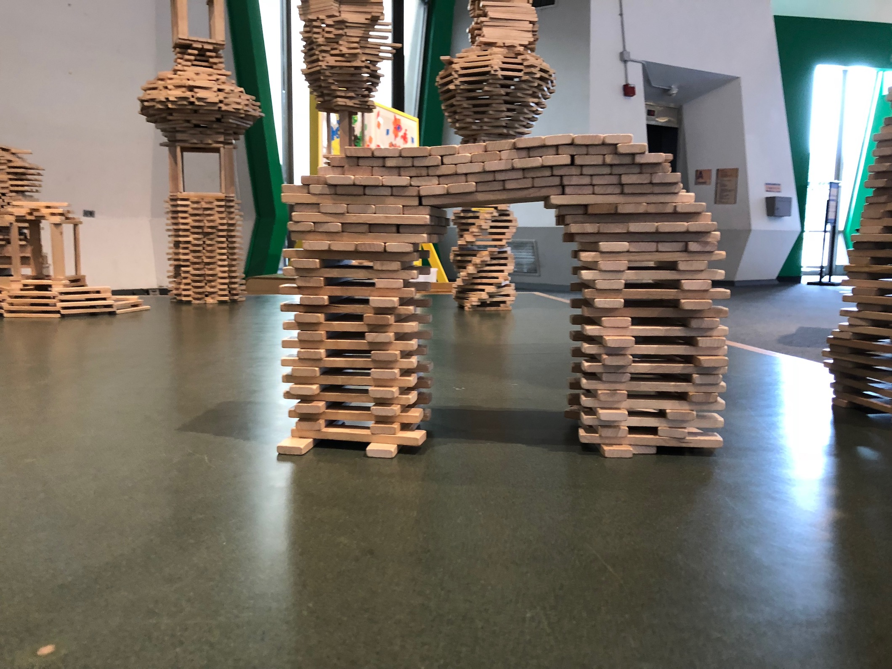
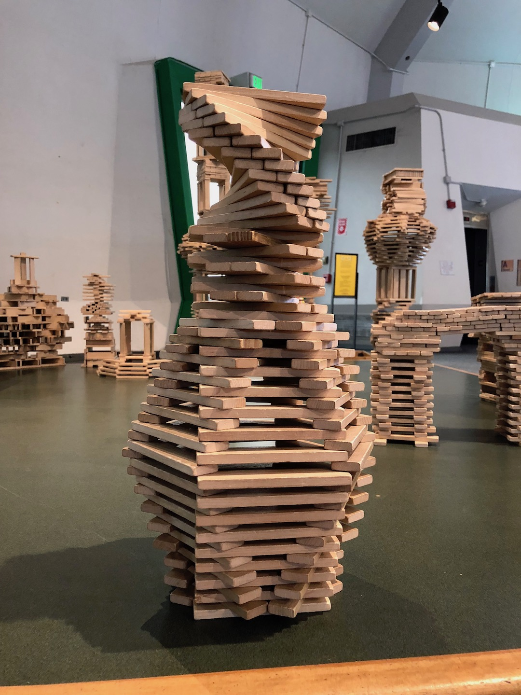

Exhibits
There are many exhibits in the Lawrence Hall of Science. I’ve volunteered for
three of them: Floor Facilitation (current), Ingenuity Lab, and Biotech Lab.
Floor facilitation floats around several small exhibits on the floor level, such
as Design Quest (where you can build rockets) or Keva Blocks (my favorite!).
Ingenuity Lab encourages children to flex their creative muscles in order to design
and test contraptions such as pinball machines and hydraulic mechanisms. In the
Biotech Lab, children partake in activities such as finding their cheek cells
under a microscope and handling different equipment (centrifuge, micropipette,
etc.).
Here are some Keva creations! I've built cities.
Here are some Keva creations! I've built cities.








Takeaways
I’m still volunteering at the Hall, but I’ve already gained much experience from
it. Some of my most memorable moments were communicating with guests in Chinese.
Many guests, or at least many of the adults, speak Mandarin as their first language.
When I communicate in Mandarin, it helps them better understand and enjoy the
experience at the Hall. Once I actually started speaking in Mandarin and the little
girl whom I was speaking to legit loved me and wouldn’t leave my side. Speaking of small
kids becoming attached to you, it’s actually such a nice feeling because it’s like I’m
the chosen one. That way, I engage in nice conversations with them and teach them some
science along the way, so I’m doing my job while having a good time!